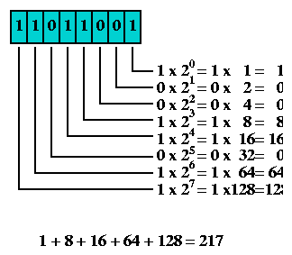

It's the act of algorithmically manipulating bits or other pieces of data shorter than a word
A word is basically a fixed sized group of bits that are handled as a unit by the instruction set and/or hardware of the processor
Modern processors, including embedded systems, usually have a word size of 8, 16, 24, 32 or 64 bits
Try visualizingbytesas
bits
AndManipulating, bitsto achieveresults
the only limit is the amount of data that can be stored
For Example lets try
Sieve of eratosthenes!
Its a Prime number Generating Algorithm
By the way
have
you
noticed it's
in
3D *?
#include<stdio.h>
#include<stdlib.h>
#include<limits.h>
#define PRIME_CONTAINER_MAX 1000000
/* Allocate 8 Million Bits(1 Million Bytes) */
unsigned char PRIME_CONTAINER[ PRIME_CONTAINER_MAX ];
/* Set all bits to 1 */
void initialize_container(){
unsigned int i;
for(i=0;i<PRIME_CONTAINER_MAX;i++){
PRIME_CONTAINER[i] = 0xff;
}
}
void set_bit(unsigned int bit_number ){
/*
bit_number / CHAR_BIT = byte number
bit_number % CHAR_BIT = bit number in the selected byte
0x01 = 0000 0001
*/
PRIME_CONTAINER[bit_number / CHAR_BIT] |= (0x01 << (bit_number % CHAR_BIT ));
}
void unset_bit(unsigned int bit_number ){
/*
bit_number / CHAR_BIT = byte number
bit_number % CHAR_BIT = bit number in the selected byte
0x01 = 0000 0001
*/
PRIME_CONTAINER[ bit_number / CHAR_BIT ] &= ~(0x01 << (bit_number % CHAR_BIT ));
}
int get_bit(unsigned int bit_number){
char byte = PRIME_CONTAINER[ bit_number/CHAR_BIT ];
byte = byte >> (bit_number % CHAR_BIT);
byte &= 0x01;
return byte;
}
Use a spacebar or arrow keys to navigate